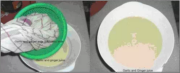

一位居住在伦敦的人的亲身经历 ， 他去巴基斯坦开会的时候 ， 突然胸口剧痛 ， 后来被医院验出来 ， 他的三条心血管已经被严重堵塞 ， 需要做搭桥手术 。 手术的时间是一个月以后 ， 在这个期间 ， 他去看一位回教国家古法治疗师 。 这位 Hakim 让他自己在家中做一个食疗 ， 他吃了一个月 。 一个月后他去同一家医院做检查 ， 发现三条血管干干净净 ， 原来堵塞的地方已经全通了 。 他是一位虔诚的回教徒 ， 为了让更多的人受益 ， 他把自己的经验放在网上分享 ， 他的前后两张血管照片也放了在网上 ， 在照片中 ， 服用食疗之前与之后的分别连普通人也看得出来 。
所需原料 ：
1 杯柠檬汁
1 杯姜汁
1 杯大蒜汁
1 杯苹果醋
制作方法 :
1. 蒜头去皮 ， 姜去皮切小片 ， 放入榨汁机榨汁 ， 或者放入搅拌器打成浆 ， 用网布隔渣 ， 绞出汁 。

2. 将蒜头 、 姜汁放入瓦煲 ， 加入柠檬汁与苹果醋 ， 大火滚 ， 小火慢煮 ， 不要盖锅盖 ， 让水份蒸发 ， 大约需要半小时 ， 剩下大约一半汁液 。 3. 温度降下后 ， 加入蜜糖 ， 仔细搅匀 ， 蜜糖可能需要很多 ， 主要是令汁液容易入口 。 4. 将成品储在有盖的玻璃瓶中 ， 放入雪柜 。
服用方法 ：
每天早餐前服用一汤匙 。 大部分人的心血 管疾病能得到根治 。 也可当作饮料 ， 预防心血管疾病和高血压 、 预防感冒等疾病 。 吃上一个月以后去医院做次检查 ， 会发现血管干干净净 ， 堵塞的地方已经全通了 。